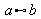

a oplus b

a ominus b
a otimes b
a odot b
a odivide b

a wideslash b

a widebslash b
Documentation / User FAQ / Formula/Math / Previous-Next
There are a few constructions without a corresponding template in the selection window:
Additional binary operators:
a oplus b |
|
a ominus b |
|
a otimes b |
|
a odot b |
|
a odivide b |
|
a wideslash b |
|
a widebslash b |
In addition, if %symbol is a userdefined symbol you can use it as a unary or binary operator as follows:
uoper %symbol a uses %symbol as a unary operator.
a boper %symbol b uses %symbol as a binary operator.
Additional relations:
a << b |
|
a >> b |
|
a def b |
|
a transl b |
 |
a transr b |
|
Additional operators:
liminf f |
lim inf f |
limsub f |
lim sub f |
In addition, if %symbol is a userdefined symbol you can use it as an operator as follows:
oper %symbol a uses %symbol as an operator.
You can read more about this in FAQ #006.
Additional brackets:
lfloor a rfloor |
|
lceil a rceil |
Since brackets have a grouping function they must always match and be correctly nested. For scalable brackets it is essential that left and right matches, but the brackets can be freely combined. Example:
You can enter left ( a right [ to typeset (a[.
You can read more about single brackets in FAQ #001.
Additional symbols:
backepsilon |
|
Additional functions:
In addition to the functions that Math knows, you can typeset other functions if you preceed the function name with func, such as func max. You can read more about this in FAQ #007.
Additional font changing commands:
nitalic a typesets a in upright shape (abbreviation for not italic).
nbold a typesets a with normal weight (abbreviation for not bold).
phantom a typesets a invisible.
The command color is used to change the color of a subformula, see FAQ #011 for details.
A complete reference on the Math input language is being worked on.